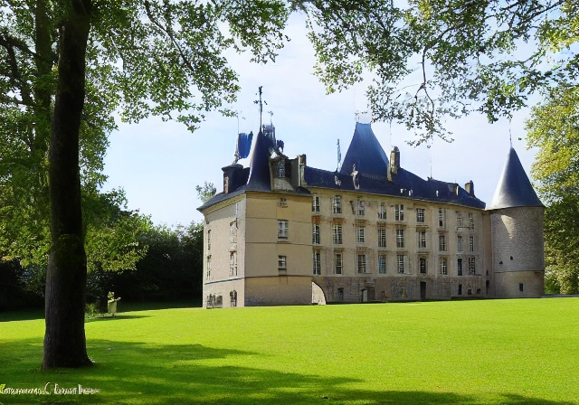

Bienvenue sur le site internet de l'office du tourisme de Roybon, France. Nous sommes heureux de vous présenter notre magnifique ville située dans la région Auvergne-Rhône-Alpes. Roybon est connue pour sa nature préservée, ses châteaux médiévaux et son patrimoine culturel riche.
Le Château de Roybon est l'un des sites les plus visités de la ville. Construit au 13ème siècle, il est un exemple remarquable d'architecture médiévale. Vous pouvez visiter le château et découvrir son histoire fascinante.

La nature est l'un des trésors de Roybon. Vous pouvez faire de la randonnée dans les collines environnantes, découvrir les lacs et les cascades, ou simplement vous détendre dans les jardins de la ville. Nous sommes fiers de notre environnement préservé et nous travaillons dur pour le maintenir ainsi.